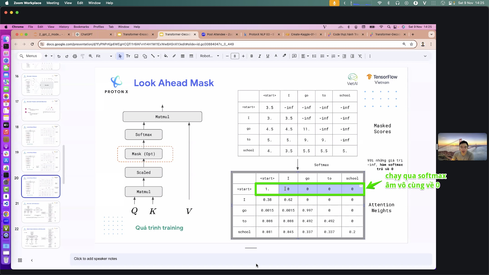
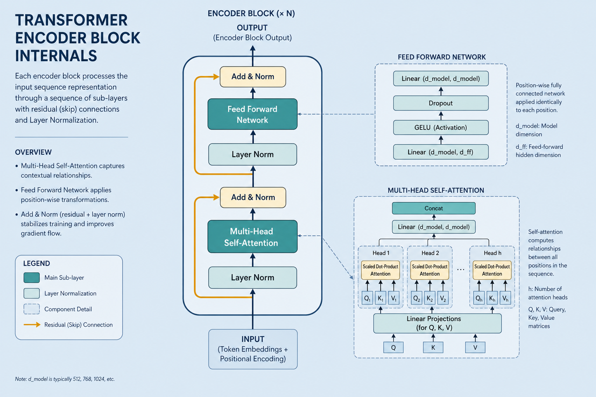

Transformer — Core LLM Architecture
Stack attention blocks + positional encoding; encoder (BERT) / decoder (GPT).
Transformer — Core Architecture Of LLMs
Stack many attention blocks and process a whole sentence in parallel instead of step by step. The framework behind BERT, GPT, and nearly every modern language model. Everyday metaphor: instead of reading word-by-word with a bookmark, every word glances at every other word at once — then you deepen that glance across many floors of the building.
Why it matters
Before Transformers, models read sentences sequentially (RNN/LSTM) — slow and prone to forgetting early context. The Transformer (2017, “Attention Is All You Need”) drops sequential processing: every word attends to every other word at once → faster GPU training and better long-range links. That pivot opened the LLM era.
Everything in this lab that feels “modern” — chat models, embeddings from BERT-like encoders, cross-attention in translation — sits inside this frame.
Key ideas
- Stacked attention blocks: each layer has multi-head attention plus a feed-forward network (typically two linear layers with a nonlinearity, expanding to ~4× model width then projecting back). Stack many layers for increasingly abstract representations (syntax → entities → discourse). A typical BERT-base has 12 layers × 768 hidden × 12 heads; GPT-class chat models often push into tens or hundreds of layers and billions of parameters.
- Positional encoding: parallel processing has no built-in order — inject position info so the model knows word sequence. Without it, “dog bites man” ≈ “man bites dog.”
- Sinusoidal (original paper): fixed
sin/cosfunctions of position and dimension — extrapolates somewhat to longer sequences. - Learned absolute (early BERT): a trainable embedding table per position index (capped by max length, e.g. 512).
- Relative / RoPE / ALiBi (modern LLMs): encode distance between tokens rather than absolute index — better long-context behavior.
- Encoder / decoder / both:
- Encoder (BERT, RoBERTa): bidirectional self-attention over the full sequence → good for classification and sentence embeddings. Masked LM pretraining fills blanks from left and right context.
- Decoder (GPT, LLaMA): generate left to right with causal masking (token i may only attend to ≤ i) → good for chat and completion. Next-token prediction is the training objective.
- Encoder-decoder (T5, BART, original Transformer): encoder reads the source; decoder generates the target and uses cross-attention (queries from decoder, keys/values from encoder) — classic for translation and summarization.
- Residual + layer norm: each sublayer is wrapped as
x + Sublayer(Norm(x))(Pre-LN is common today). Skip connections keep gradients flowing through deep stacks; layer norm stabilizes activation scales. - Multi-head = parallel views: split
d_modelacross h heads (e.g. 768 / 12 = 64 dims per head). One head may track grammar, another coreference — outputs concatenate and project withW_O. - Complexity: full self-attention is O(n² · d) in sequence length n and width d. Doubling context roughly quadruples attention compute/memory — why long docs need chunking, sliding windows, or sparse/linear attention variants (train-gpu.md).
- Parallel = fast training: no step-by-step RNN dependency across time → full sequence batched on GPU. Autoregressive inference is still sequential token-by-token (unless speculative decoding / parallel drafts).
Worked example (intuition)
Sentence: "The cat sat on the mat." (6 tokens after simple whitespace split; real BPE might be similar or slightly different.)
1. Embed: each token ID → vector of size d_model (e.g. 768) + positional encoding of the same size → matrix X ∈ ℝ^{6×768}.
2. Layer 1 self-attention (encoder): for query "sat", compute scores against all keys. After softmax, "sat" might put ~0.35 on "cat" (subject), ~0.25 on "mat" (location), and smaller mass on function words. Multi-head repeats this with different projections.
3. Feed-forward: each position independently: FFN(x) = W₂ · GELU(W₁ x) — mixes features within the token’s new context-aware vector.
4. After N layers: representations are contextual. A classification head (BERT-style) often reads the [CLS] vector (or mean pool) → logits over labels. A LM head (GPT-style) reads the last position → vocabulary logits for the next token (softmax over ~50k–100k+ tokens).
5. Decoder contrast: if this were causal GPT, when predicting the word after "sat", attention to "mat" would be masked out — the future must not leak.
Common pitfalls
- Confusing encoder vs decoder tasks — don’t expect a pure encoder to generate fluent chat; don’t expect a causal decoder to be the best frozen sentence embedder without pooling tricks (sentence-transformers.md).
- Ignoring context length — attention is O(n²); stuffing a 50-page PDF into one forward pass OOMs or truncates silently.
- Dropping positional info when hacking — broken order sensitivity; bag-of-embeddings behavior.
- Mixing Pre-LN vs Post-LN assumptions — copying layer order from one paper into another codebase can destabilize training.
- Assuming bidirectional = always better — for open-ended generation, causal decoders win; bidirectional encoders shine at understanding fixed text.
Illustrations






Deeper dive
- Scaled dot-product attention:
Attention(Q,K,V) = softmax(QKᵀ / √d_k) V. The√d_kscale (e.g. √64 ≈ 8) keeps logits from saturating softmax when dimensions grow — without it, gradients vanish. - Causal mask mechanics: before softmax, set future positions to
−∞(or a large negative). One bug (off-by-one in the mask) leaks the next token during training and inflates perplexity metrics while breaking real generation. - Cross-attention shapes: decoder queries are
T_tgt × d; encoder keys/values areT_src × d. Translation quality collapses if source encodings are truncated or misaligned with the tokenizer. - KV cache (decoder inference): reuse past keys/values so each new token attends in O(n) to history instead of recomputing the full triangle — memory grows with context; this is the main serving bottleneck for long chats.
- Parameter intuition: attention projections are
4 · d²per layer (Q,K,V,O); FFN is often8 · d²(up and down). FFN usually dominates parameter count; attention dominates memory at long n. - Failure mode — context stuffing: past the trained context window, quality drops sharply unless the model uses RoPE scaling / YaRN / sliding window. Silent truncation of the beginning of a prompt is a common production bug.
- Encoder-vs-decoder choice API-wise: Hugging Face
AutoModel(encoder body),AutoModelForMaskedLM,AutoModelForCausalLM,AutoModelForSeq2SeqLM— picking the wrong head class is a frequent beginner error. - Attention pattern sanity check. Visualize one head’s weights on a short sentence (attention demo / seaborn heatmap). If every query puts mass only on the first token or uniform noise, suspect masking, positional bugs, or an untrained head — not “Transformers don’t work.”
- Width vs depth trade. Holding compute roughly fixed, very deep narrow stacks and shallow wide stacks behave differently for transfer; for lab classifiers, a distilled 6-layer MiniLM often beats a poorly fine-tuned full 24-layer model on latency and overfitting.
Decision guide
| Situation | Prefer | Avoid / why |
|---|---|---|
| Classify or embed a whole sentence/doc | Encoder (BERT-family) or Sentence-BERT on top | Pure causal decoder without pooling — not trained for symmetric similarity |
| Chat, code completion, open generation | Causal decoder (GPT-family) | Bidirectional encoder alone — cannot emit fluent left-to-right text |
| Translation / summarization seq2seq | Encoder–decoder (T5, BART) or instruction-tuned decoder with careful prompting | Encoder-only — no generative pathway |
| Need >4k–8k tokens of context | Models with RoPE/ALiBi + long-context training; or chunk + retrieve | Naively extending sinusoidal absolute positions — poor extrapolation |
| On-device / low latency classify | DistilBERT / MiniLM-class encoders | Full 70B decoder “just to label sentiment” — cost without benefit |
| Debugging “model ignores word order” | Check positional encodings / RoPE applied | Assuming attention alone encodes position — it does not |
Case study
Explain why a chat model and a classifier need different Transformer “shapes” on the same English sentence.
- Inputs: sentence
"The cat sat on the mat."tokenized to ~6–8 BPE ids; compare BERT-base encoder vs a small causal GPT-style decoder. - Steps: encoder builds bidirectional states (token
"sat"may attend to"mat"); pool[CLS]/mean → classification logits. Decoder at position of"sat"masks future"mat"; LM head predicts the next token distribution over the vocab (~50k). - Output: encoder path → sentiment/topic label; decoder path → continuation text. Same attention math, different mask + head.
- What you'd check: causal mask off-by-one (future leak); context length truncation of the prompt start; wrong HF class (
ForCausalLMvsForSequenceClassification); O(n²) memory if you paste a huge PDF into one forward.
Lab checklist
- [ ] Sketch one encoder block: attention → residual → FFN → residual
- [ ] Write the causal mask rule in one sentence and give a 4-token example matrix
- [ ] Load an encoder checkpoint and a causal LM checkpoint; note which task heads exist
- [ ] Run a short sentence through an attention visualization (lab demo or notebook)
- [ ] Measure what happens when input length approaches the model max position
- [ ] Compare parameter count of attention projections vs FFN for one layer (order-of-magnitude)
- [ ] Pick encoder vs decoder for: (a) spam classify, (b) chat reply — justify in one line each
- [ ] Read the positional encoding type on a modern LLM card (RoPE / ALiBi / absolute)
Pipeline
tokens → embedding + positional → [N × (multi-head attention + feed-forward)] → representation
→ head: classification / generation
The Transformer is the “house frame” wrapping attention.md, embedding.md, and softmax.md into one complete model.
Slides & demo
| Link | |
|---|---|
| Slides | slides/transformer |
| Related demo | demos/attention |
References
- Vaswani et al. 2017 — Attention Is All You Need
- Jay Alammar — The Illustrated Transformer
Related
- attention.md, embedding.md, softmax.md
- huggingface.md — pretrained Transformer models